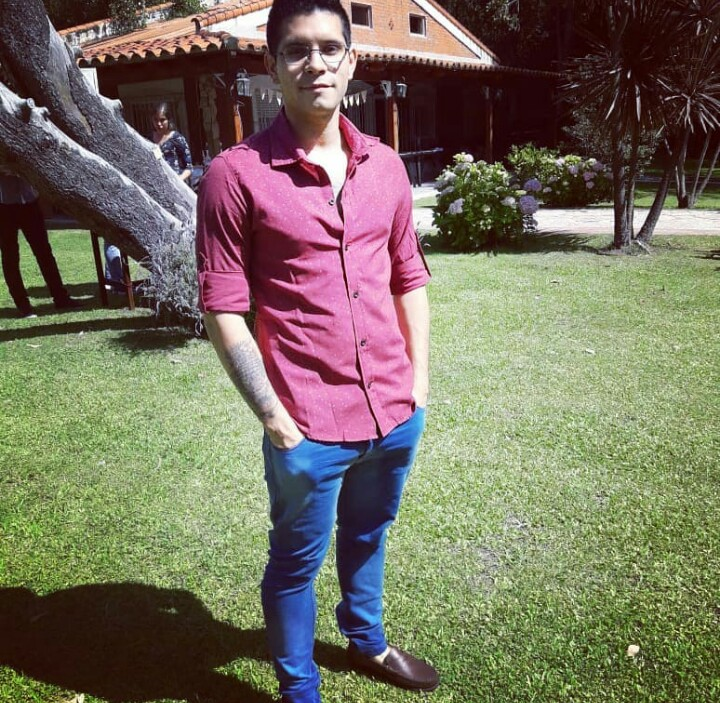

Presentacion

Soy Randy Sleyker Mendoza Chacon, estudiante de Tercer año de Ingenieria en Informatica, actualmente busco orientarme en el desarrollo Con Python, especificamente desarrollo web, para ello me estoy capacitando como desarrollador backend con Python Django y posteriormente busco capacitarme en el Front-end para llegar a dominar
ambos perfiles y ser desarrollador Full-Stack.
Cursos realizados
- Curso Python Platzi
- Curso Git y Github Platzi
- Curso Basico de diseño web Html5 y CSS telefonica Certificado
- Curso JavaScript (en proceso) telefonica
- Curso de Django (en proceso) Platzi
Proyectos Academicos y de Cursos
- Algoritmo de Busqueda Binaria click
- Juego del Ahorcado click
- Aplicacion de Escritorio con Python (interfaz grafica Tkinter, manejo de CRUD y BBDD Sqlite3) click
- Caluladora digital Basica con Python (interfaz grafica Tkinter) click